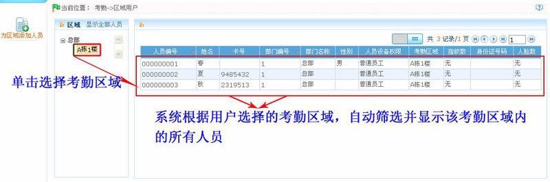
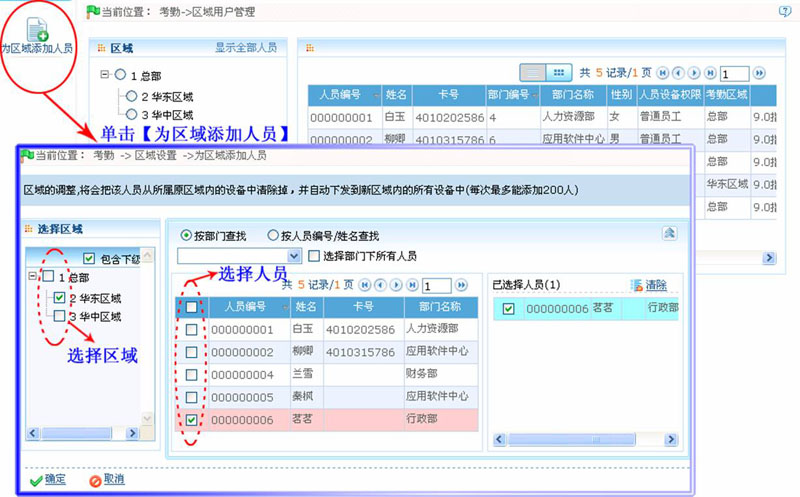
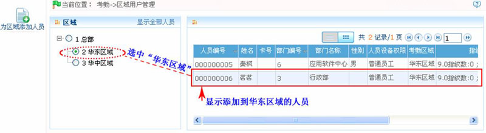

7.9 区域用户管理
单击【考勤】 【区域用户】，进入区域用户管理主页面：
【区域用户】，进入区域用户管理主页面：

在本页面中，用户可以为区域添加人员，与此同时，单击打勾选中左边考勤区域列表内的考勤区域，系统会自动筛选该区域下的人员，并显示在右边的人员列表中，该功能为人员的查看提供了一个便利空间。
为区域添加人员的具体方法如下：
1、单击【为区域添加人员】图标，进入为区域添加人员页面：

2、在“选择区域”框中，选择考勤区域（可多选），在“人员选择框”中，选择人员（可多选）。
3、设置完成后，单击【确定】保存，并返回区域用户管理页面。
4、在区域用户管理主页面，单击选中“华东区域”，此时在右边的“区域人员列表”中可查看到该人员信息。

 备注：进行为组织添加人员操作后，即将该人员的区域设置为用户选中的考勤区域，并将该人员下发到该考勤区域的所有设备中，同是删除该人员从原考勤区域的所有设备中删除。
备注：进行为组织添加人员操作后，即将该人员的区域设置为用户选中的考勤区域，并将该人员下发到该考勤区域的所有设备中，同是删除该人员从原考勤区域的所有设备中删除。